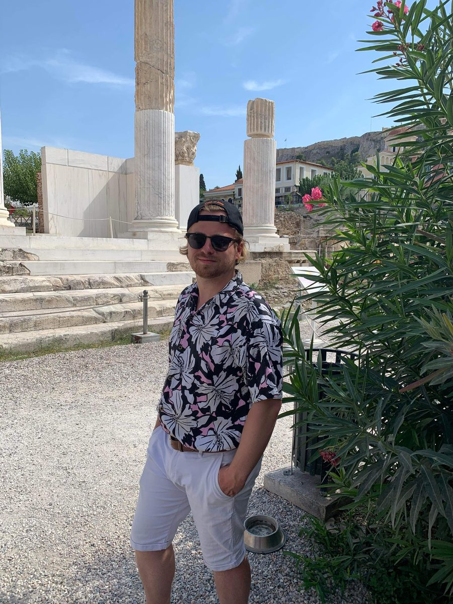

About me

Hello! I'm a Postdoctoral Research Associate at MIT, where I spend my time researching Galaxy dynamics and dark matter! I mostly specialise in the dynamics of the stellar halo, dark matter subhaloes and the Galactic bar. I also have an interest in globular clusters, and the use of chemical abundances for Galactic archaeology.
I was born and raised in North Wales. Later I left the UK when I was inspired and helped by the Sutton Trust US Programme to apply to, and ultimately accept a place at, Princeton University in the United States. There, I concentrated in Astrophysics with a certificate in Applied and Computational Mathematics. Following this, I spent one year at the University of Edinburgh doing a master's degree in Theoretical Physics, and then eventually completed my PhD at the Institute of Astronomy at the University of Cambridge under the supervision of Vasily Belokurov and N. Wyn Evans.
Please contact me if you have any questions about doing a PhD, studying Astronomy, or applying to US Universities as a Brit. I am particularly interested in helping first generation college students. Get in touch.